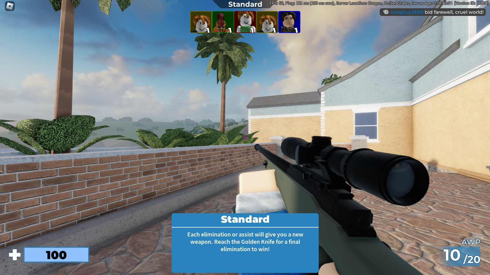

Arsenal
เป็น Map Roblox เเนวยิงปืนFPS Shooting ที่ผมชอบเล่นมากๆตั้งเเต่ ม.1 จนทุกวันนี้ยังเป็น Map ที่ผมคิดว่ายังสนุกอยู่เเละมันมากๆ ทั้งโหมดการเล่นที่มีให้เลือกหลายโหมดเเละเล่นเเบบ2ทีมหรือจะเเบบเป็น4ทีมก็ได้เเละโหมดยิงกันเองเเบบไม่มีทีม เเล้วยังมีโหมดที่ผมชอบมากๆคือโหมดที่สามารถสุ่มปืนให้กับผู้เล่นเมื่อผู้เล่นได้Kill เเล้วเกมนี้ยังสามารถเปลี่ยนSkinsตัวละครของผู้เล่นเเละSkinsปืนได้ด้วยการสุ่มกล่อง จนทุกวันนี้Map Roblox Arsenal ก็ยังเป็นเกมยิง FPS Shooting ใน Roblox ที่ผมชื่นชอบ จนถึงทุกวันนี้ เเละยังมีคนเล่นเยอะอยู่มาจนถึงปัจจุบัน เเละติดอยู่ใน Trending in Shooting Map Roblox ที่มีคนเล่นเยอะที่สุดในเกม Roblox อีกด้วย
